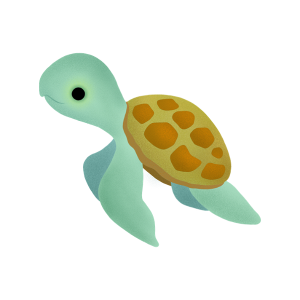

1
Draw 2 Cards
or Play a Card
Draw 2 cards using any mix of the deck and the pool, or choose to play a card instead.
From waves to wings.
Create vibrant ocean ecosystems, discover powerful card combinations, and outmaneuver your opponents before the END GAME card surfaces. Easy to learn, deep to master, and built to give back - 2% goes to ocean conservation.



Solo, head-to-head, or a crowded table. Plays in 20-60 minutes.
Nine species, eight oceans, fifty-plus Star Abilities to chain.
Draw cards, play critters, and build your ecosystem. The basics are simple, but the best strategies reveal themselves with every game.
2% goes to ocean conservation on every game sold. Receipts published.
Three simple steps happen on every turn.
Draw 2 cards using any mix of the deck and the pool, or choose to play a card instead.
Play an Ocean to your reef to build your board and create more places for species.
Play species and combine cards to boost your points. Matching families, full oceans, and smart placement help you score more.
Oceans are the foundation of your reef. Play them to open space for species and set up stronger combinations.
Some cards have Star Abilities. These special effects trigger when you play the card and can help you build bigger turns and stronger combos.
Scoring comes from playing cards and combining cards, using Star Abilities, and following strong strategies.
The game ends when someone draws the End Game card, which is shuffled somewhere in the bottom 15 cards of the deck. After it is drawn, every player gets one more turn.
Everything in one place: a sixty-second Quick Start, the printed rulebook word for word, and every strategy the game knows.
Open the Rules → 🚀 Quick Start 📖 Full Rulebook 🧭 StrategiesTip: Plan ahead, stay flexible, and combine your cards to score big.
Don't want to do math at the end of the game? Take a photo of your final board. Our scorer reads every card, runs every synergy, and tells you who won - to the point.

Nine species. 150+ individual cards. Each illustrated by hand. Tap a tab to swap the grid.
Master eight distinct ocean environments, each designed to reward smart card play, species synergy, and creative strategy. No two ecosystems have to grow the same way.


Four ocean environments are featured here, with four more waiting in the box: Kelp Forest · Mangrove · Pier · Deep Ocean
2% goes to ocean conservation on every game sold, and every game played online is a game played for the reef.
Growing up near the Jersey Shore, my family and I spent countless days in and around the ocean. As I got older and moved away, I realized how much those memories shaped my love for the ocean and the life in and around it.
That passion is a big part of why I created Currents and Critters. I wanted to build something fun that also gives back - 2% goes to ocean conservation - so future generations can experience clean, healthy, and abundant oceans the same way I did growing up.